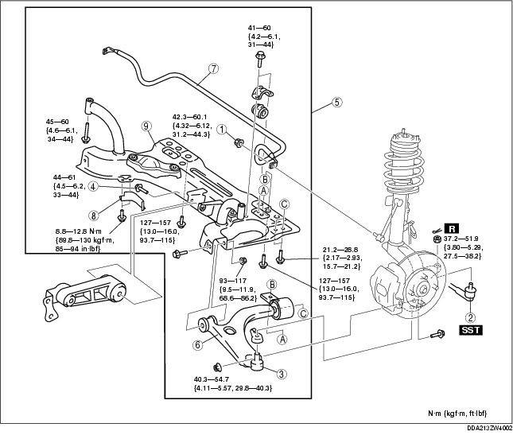

1. Remove the steering gear and linkage, and suspend it. (See STEERING GEAR AND LINKAGE REMOVAL/INSTALLATION.)
2. Remove in the order indicated in the table.
3. Install in the reverse order of removal.
4. Inspect the wheel alignment, and adjust it if necessary. (See FRONT WHEEL ALIGNMENT.)

.
|
1
|
Nut (stabilizer control link lower side)
|
|
2
|
Tie-rod end
|
|
3
|
Lower arm bolt joint
|
|
4
|
Bolt (No.1 Engine Mount)
|
|
5
|
Crossmember component
|
|
6
|
Front lower arm
|
|
7
|
Front stabilizer
|
|
8
|
Front crossmember
|
1. Loosen the transaxle side No.1 engine mount installation bolt.
2. Remove the crossmember side No.1 engine mount installation bolt.
1. Support the crossmember component using the jack.
2. Remove the bolt.
1. Install the crossmember side No.1 engine mount installation bolt.
2. Tighten the transaxle side No.1 engine mount installation bolt.
Tightening torque